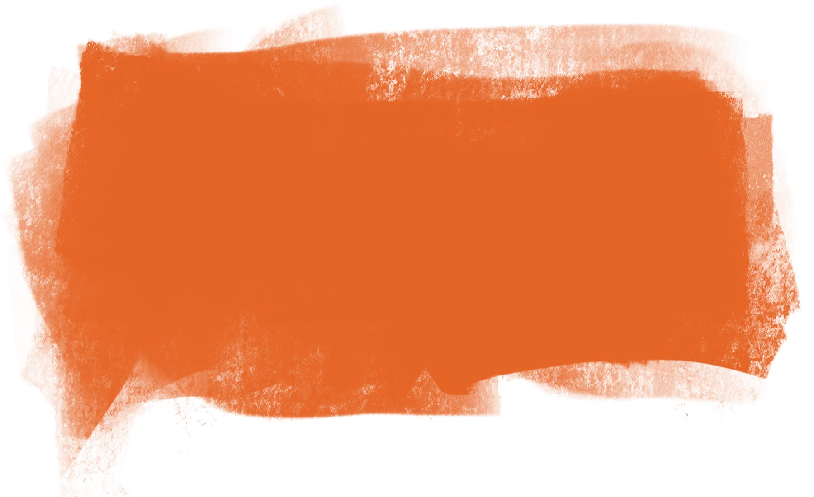

Privately Held
A mental-health crisis, an industry's hidden toll
Seeing need and seeking profit,
a company’s push to expand psychiatric care brought peril
a company’s push to expand psychiatric care brought peril
Best experienced with audio